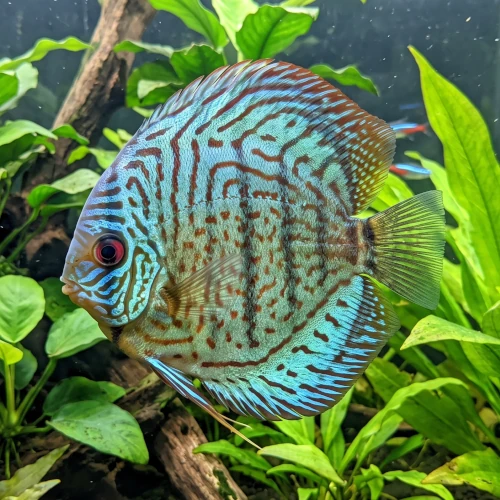

Nome popular principal
Acará-Disco
Acará-Disco, Disco, Peixe-Disco
Ficha de peixe
Ciclídeos
O icônico Rei dos Aquários de água doce exige água quente, limpa e um grupo de companheiros tranquilos para se destacar.

Nome popular principal
Acará-Disco, Disco, Peixe-Disco
Nome científico
Nome técnico essencial para taxonomia, cruzamento de manejo e referência editorial consistente.
Dificuldade de manejo
Use este nível como referência inicial, sempre considerando volume, estabilidade e compatibilidade do aquário.
Seção 1
Seção 2
Seções 4 a 6
Acará-Disco tem hábito alimentar onívoro. Média. 2 a 3 vezes ao dia. Sua dieta exige rações de alta qualidade específicas para Discos, além de suplementação com alimentos congelados e vivos.
Praticamente impossível diferenciar visualmente fora do período de reprodução, quando a papila genital fica aparente. Tipo de reprodução: Ovíparo. Dificuldade de reprodução: Avançado. Os alevinos se alimentam nos primeiros dias de vida consumindo o muco nutritivo secretado na pele dos próprios pais.
Alta. Substrato recomendado: Areia fina de rio sem arestas cortantes. Necessidade de esconderijos: Média. Aprecia aquários bem decorados com troncos dispostos verticalmente, pouca correnteza e plantas resistentes ao calor.
Seção 7
Pode atingir até 20 cm e ultrapassar 10 anos de vida se mantido em água com baixíssimo teor de nitrato e filtragem eficiente.
Seção 8
O Acará-Disco exige água bem quente, idealmente entre 28°C e 30°C para manter seu metabolismo e sistema imunológico saudáveis.
Recomenda-se manter um grupo mínimo de 5 a 6 indivíduos para distribuir a agressividade hierárquica do grupo.
Sim, é considerado de nível avançado por ser sensível a variações de parâmetros de água e exigir TPA constante e alimentação de qualidade.